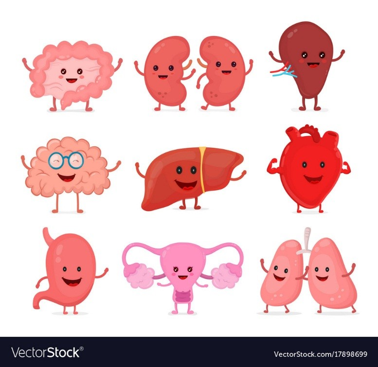

<!--
  Generated template for the TutorialPage page.

  See http://ionicframework.com/docs/components/#navigation for more info on
  Ionic pages and navigation.
-->
<ion-header>

  <ion-toolbar>
    <ion-buttons end>
      <button ion-button color="primary" (click)="endTutorial()">Skip</button>
    </ion-buttons>
  </ion-toolbar>

</ion-header>


<ion-content class="tutorial-page">

  <!--<ion-scroll scrollY="true" style="height:100vh;">
  </ion-scroll>-->
    <ion-slides pager>
      <ion-slide *ngFor="let slide of slides">
        
        <h2 class="slide-title" [innerHTML]="slide.title"></h2>
        <p [innerHTML]="slide.description"></p>
      </ion-slide>
      <ion-slide>
        <ion-toolbar>
        </ion-toolbar>
        
        <h2 class="slide-title">¿Listo para comenzar a cuidarte?</h2>
        <button ion-button large clear icon-end color="primary" (click)="endTutorial()">
          Empezar
          <ion-icon name="arrow-forward"></ion-icon>
        </button>
      </ion-slide>
    </ion-slides>

</ion-content>
